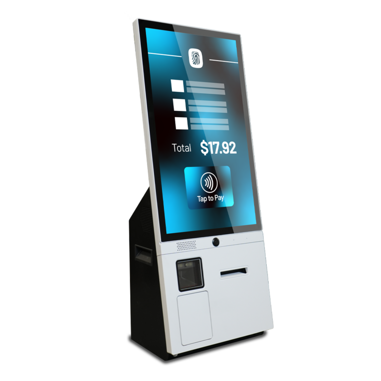
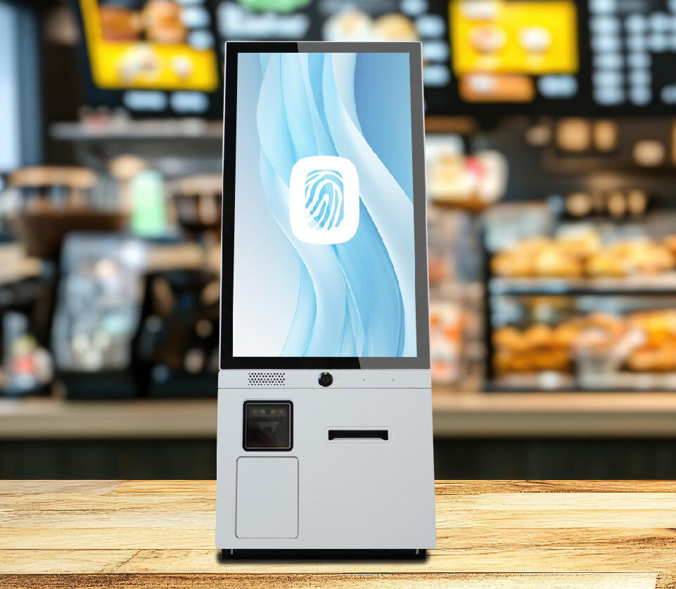

Propuesta de solución · Newrest México
Comedores corporativos
sin filas ni desperdicio.
Vamo Mesa para la operación de Newrest en las oficinas corporativas de Nike: menú, precompra con beneficio, cocina, inventarios, satisfacción e indicadores en una sola plataforma.
Indicadores de gestión
Decisiones con datos, por comedor y por día

Aprovechamiento
Porciones vendidas vs. planeadas, sobrantes y su costo estimado.
Tiempos
Preparación y tiempo en piso (de listo a entregado) por pedido y por hora.
Beneficio
Uso del beneficio vs. pago con tarjeta, ticket promedio y precompra.
Satisfacción
Calificación, % de satisfechos y tasa de respuesta de encuestas.
Demanda
Platillos más pedidos y horas pico para planear personal.
Reportes
Platillos, tiempos, satisfacción e inventario en CSV para ERP o nómina.
Equipo en sitio
Kiosco Summit y pantallas de servicio


- Pago cashless: tarjeta, celular o reloj por NFC, además del beneficio
- Lector de QR para recoger la precompra o identificarse
- Fila rápida: quien apartó en el celular sólo recoge
- Aliado de hardware: Touch Dynamic
Kiosco Summit
Autoservicio con beneficio, tarjeta o NFC.
Pantalla de pase
Tablero táctil sin papel para cocina y entrega.
Pantalla de salida
Códigos en preparación y listos, a la vista del comensal.
Impresora térmica
Tickets de 80 mm donde el administrador prefiera papel.
Instalación, configuración, capacitación y monitoreo remoto. Imágenes del kiosco Summit cortesía de Touch Dynamic.
Demo en vivo
Pruébalo hoy

cotizador.menteia.com/mesa
- Portal del colaborador (número 10021 a 10028, NIP 1234)
- Kiosco táctil
- Manager de cocina con indicadores y reportes
- Pase sin papel y pantalla de salida
Comedor de ejemplo con datos ficticios.
Próximos pasos
Hagamos el piloto en el comedor de Nike
- Visita técnica al comedor corporativo
- Definir la modalidad de adquisición (recomendamos leasing por equipo)
- Alcance de integraciones: nube, inicio de sesión, beneficio y ERP
- Propuesta económica y calendario del piloto

Gracias
Vamo Mesa · familia Vamo